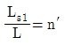
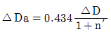
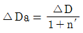
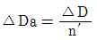
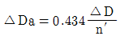
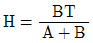
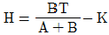
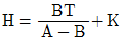
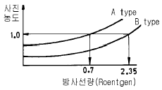

방사선비파괴검사기사(구) (2004-09-05 기출문제)
1과목: 방사선투과시험원리
1. 두께가 31.8㎜(1.25인치)인 강용접부를 방사선투과시험으로 2.0% 식별도를 얻고자할 때 ASTM 투과도계 1.6㎜의 구멍을 식별할 수 있었다면 이 때 투과도계의 두께는?
- 0.0⑤인치(0.13㎜)
- 0.010인치(0.25㎜)
- 0.020인치(0.51㎜)
- 0.030인치(0.76㎜)
(정답률: 알수없음)

2. γ선 투과시험에 사용되는 방사성 동위원소중 핵분열시 부산물로 생성이 되어 이중 캡슐(capsule)로 밀봉하여야하는 등 특히 취급에 안전을 요하는 원소는?
- Ytterbium-169
- Thulium-170
- Cesium-137
- Radium-226
(정답률: 알수없음)
3. 다음 중 방사선투과사진의 콘트라스트에 영향을 주는 인자가 아닌 것은?
- 기하학적 조건
- 시편의 두께차
- 필름의 종류
- 방사선의 에너지
(정답률: 알수없음)
4. 다음 중 방사선작업종사자의 인체가 방사선에 영향을 받는 요소가 아닌 것은?
- 개개인의 생물학적 효과비
- 조사된 방사선의 총량
- 선원의 용량
- 개개인의 연령차이
(정답률: 알수없음)
5. 다음 중 X선이나 γ선의 특성이 아닌 것은?
- 전자파이다.
- 전자장에 의해 편향된다.
- 전리작용이 있다.
- 운동에너지를 가지고 있다.
(정답률: 알수없음)
6. 외부 방사선장해방어의 3대 원칙이 아닌 것은?
- 시간
- 노출
- 거리
- 차폐
(정답률: 알수없음)
7. X선 발생장치는 X선 발생기와 제어장치로 구분한다. 다음 중 X선 발생기의 점검부위가 아닌 것은?
- 퓨우즈 단락여부
- 가스압력 상태
- 완충스프링 동작여부
- 냉각용 팬 작동여부
(정답률: 알수없음)
8. 다음 중 방사선투과검사법 적용이 가장 부적합한 것은?
- 강관의 내부표면 결함
- 주조물의 내부결함
- 용접부의 내부결함
- 비철금속 주물의 내부결함
(정답률: 알수없음)
9. 다음 중 중성자투과가 가장 큰 물질은?
- 플라스틱
- 물
- 납
- 보론카바이드
(정답률: 알수없음)
10. 다음 중 와전류탐상검사로 검사가 곤란한 것은?
- 탄소강과 스테인리스강과의 재질 구별
- 도금의 두께측정
- 배관 용접부 내부의 기공
- 페인트의 두께측정
(정답률: 알수없음)
11. X선 발생장치에서 관전압이 80kV일 때 발생하는 X선의 최단파장은 얼마인가?
- 0.21Å
- 0.16Å
- 0.12Å
- 0.08Å
(정답률: 알수없음)
12. 방사선투과시험에서 필름입상성(graininess)의 설명으로 잘못된 것은?
- 입상성이 클수록 선명하다.
- 입상성이 클수록 필름감도가 높다.
- 선질이 클수록 입상성이 커진다.
- 방사선의 투과량이 증가할수록 입상성이 증가한다.
(정답률: 알수없음)
13. 방사선투과시험에서 요구하는 기하학적 불선명도에 대한 설명이다. 올바른 것은?
- 기하학적 불선명도는 항상 2%이내 이어야 한다.
- X선 장치의 초점 크기가 클수록 기하학적 불선명도는 작아진다.
- 기하학적 불선명도는 선원-시험체 또는 시험체-필름간 거리를 조정함으로 작게 할 수 있다.
- 초점크기가 일정하면 기하학적 불선명도는 항상 동일한 크기를 나타낸다.
(정답률: 알수없음)
14. 식별한계 콘트라스트를 바르게 설명한 것은?
- 식별한계콘트라스트는 방사선투과사진의 감도를 말한다.
- 식별한계콘트라스트는 피사체콘트라스트와 필름콘트라스트를 합한 것이다.
- 식별한계콘트라스트가 투과사진콘트라스트 보다 크면 결함은 식별되지 않는다.
- 식별한계콘트라스트는 감광속도가 빠른 필름일수록 커진다.
(정답률: 알수없음)
15. 다음 중 기하학적 불선명도가 지나치게 큰 경우는?
- 선원· 피사체간 또는 피사체· 필름간의 거리가 큼
- 후방산란이 과도함
- 필름의 입도가 작음
- 피사체가 놓인 방향이 수직임
(정답률: 알수없음)
16. 제품에 적합한 비파괴검사를 적용하기 위해 필수적으로 고려되어야 할 사항이 아닌 것은?
- 검사장치와 절차서가 검사 대상물과 검출하고자 하는 결함에 적합해야 한다.
- 수시로 내부 감사를 통하여 비파괴검사 과정을 침투, 방사선 등 여러 방법으로 변경 실시토록 해야만 한다.
- 검사자는 충분히 훈련되고 경험이 풍부해야 한다.
- 합격기준은 검사물이 부적격 부품으로 규정될 수 있는 특성을 정확히 정의해야 한다.
(정답률: 알수없음)
17. 반가층(HVL)에 대한 설명으로 틀린 것은?
- 동일한 방사성 동위원소라도 물질마다 반가층은 다르다.
- 방사선의 강도가 반으로 감소되는 물질의 두께를 말한다.
- 반가층은 에너지가 증가하면 감소된다.
- 방사성 동위원소는 모두 반가층이 일정하다.
(정답률: 알수없음)
18. 일차방사선이 시험체의 얇은 부분을 통하여 필름 홀더나 카세트에 부딛쳐 상의 경계부분 바로 안쪽에서 현저하게 나타나는 산란방사선의 영향을 무엇이라 하는가?
- 그늘(Shadow)
- 언더컷(Undercut)
- 기하학적 불선명도
- 콘트라스트(Contrast)
(정답률: 알수없음)
19. 방사선 투과사진을 관찰하는 실내가 밝을 경우, 투과광 L이외에 산란광 LS1이 추가된다. 이 때

이라면 겉보기 콘트라스트 ΔDa를 바르게 나타낸 것은?



(정답률: 알수없음)
20. 방사선의 산란에는 몇 가지 형태가 있다. 다음 중 비간섭성 산란이 일어나는 것은?
- Thomson산란
- 원자산란
- Compton산란
- 탄성산란
(정답률: 알수없음)
2과목: 방사선투과검사
21. 어떤 방사선투과시험으로 결함의 위치를 측정하는 것이 가능할 때 아래 조건으로 시험체 저면에서 결함까지의 깊이(H)를 바르게 나타낸 식은? (단, D는 필름면에서 결함까지의 거리, A는 선원의 이동거리, T는 선원-필름간 거리, K는 시편 하단면에서 필름면까지의 거리, B는 결함상의 이동거리이다.)

- H=K-D


(정답률: 알수없음)
22. 방사선투과검사를 할 때 사용되는 투과도계의 용도는?
- 결함의 크기 측정
- film의 contrast 결정
- 사진농도 결정
- 투과사진의 상질 판정
(정답률: 알수없음)
23. X선 장치의 하나인 X선관의 구조에 관한 다음 기술중 가장 잘못된 것은?
- 음극선 전자발생원인 필라멘트가 있어야 한다.
- 융점이 높고, 낮은 원자번호를 가진 표적금속을 사용하는 것이 좋다.
- 표적 금속을 냉각시키는 냉각장치 계통이 필요하다.
- 음극선 전자를 가속하기 위한 고전압원이 필요하다.
(정답률: 알수없음)
24. 200㎜ 두께의 어떤 시험체를 X선 투과검사시에 결함 검출감도가 가장 높은 X선 발생장치는?
- 형광투시(fluoroscopy) 장치
- 단층촬영(tomography) 장치
- 섬광촬영(flash radiography) 장치
- 이동 방사선투과검사(in-motion radiography) 장치
(정답률: 알수없음)
25. 방사선 투과사진에서 미세한 윤곽의 상이 얼마나 잘 검출될 수 있는가를 나타내는 용어는?
- 감도(Sensitivity)
- 분해능(Resolution)
- 필름 콘트라스트(Film Contrast)
- 피사체 콘트라스트(Subjct Contrast)
(정답률: 알수없음)
26. 400㎃.sec의 노출조건으로 A type film의 농도가 1.0 이되었다. B type의 film으로 사진농도가 1.0 이 되려면 노출조건은 얼마로 하여야 되는가? (단, 아래 그림참조)

- 336 ㎃.sec
- 893 ㎃.sec
- 1000 ㎃.sec
- 1344 ㎃.sec
(정답률: 알수없음)
27. 미시방사선투과시험(microradiography)에 사용되는 X선장치의 일반적인 전압의 사용한계는?
- 50㎸
- 100㎸
- 150㎸
- 200㎸
(정답률: 알수없음)
28. 방사성 동위원소 Ir-192를 사용하는 경우 일반적으로 사용되는 증감지(Lead Screen) 전면 및 후면의 두께는?
- 전면 10/1000인치, 후면 15/1000인치
- 전면 5/1000인치, 후면 20/1000인치
- 전면 5/1000인치, 후면 10/1000인치
- 전면 3/1000인치, 후면 10/1000인치
(정답률: 알수없음)
29. X선 발생장치의 구조중 주요 구성부가 아닌 것은?
- X선관
- 고전압 발생기
- 제어기
- 선원 안내관
(정답률: 알수없음)
30. 주강품의 방사선투과시험시 주강품이 여러 두께를 가지므로 두께차에 대한 고려가 필수적이다. 192Ir 를 사용하는 경우 두께(T)와 산란비(n)를 실험식으로 나타낸 것 중 올바른 것은?
- n ≒ 0.075 T
- n ≒ 0.025 T
- n ≒ 0.1 T
- n ≒ 0.2 T
(정답률: 알수없음)
31. 방사선투과검사에 의해 촬영된 필름을 현상할 때 현상시간을 증가시키면 필름 특성곡선은 어떻게 변하는가?
- 경사는 높아지고 왼쪽으로 이동한다.
- 경사는 높아지고 오른쪽으로 이동한다.
- 경사는 변하지 않고 왼쪽으로 이동한다.
- 아무 변화 없다.
(정답률: 알수없음)
32. 중공 자석을 이용하여 전자를 자기유도형으로 가속시켜 높은 에너지를 방출시킬 수 있는 가속장치를 무엇이라고 하는가?
- 선형 가속장치
- 베타트론
- 공진 X-선 발생장치
- 정전가속장치
(정답률: 알수없음)
33. γ선 강도와 curie수는 일반적으로 비례한다고 알려져 있으나 선원 물질층이 두터우면 이러한 비례 관계에서 벗어난다고 한다. 그 이유는?
- 선원 내부에서는 γ선 유기 핵반응이 일어나므로
- 자기흡수(self-absorption)가 일어나므로
- γ선에 의해 자체 가열되므로
- snell의 법칙에 따르므로
(정답률: 알수없음)
34. 주강품에 발생하는 결함 중 주형내에서 용탕의 2개의 흐름이 합류하였으나 그 경계가 완전히 용입되지 못한, 즉 금속학적으로 접합되지 못한 것을 무엇이라 하는가?
- 수축관
- 미스런
- 콜드셧
- 균열
(정답률: 알수없음)
35. 다음 중 강철주물 결함에 해당하지 않는 것은?
- 용락(Burn through)
- 기공 및 블로홀(Gas and Blow hole)
- 내부 수축관(Internal shrinkage)
- 모래 물림(Sand spots and Inclusion)
(정답률: 알수없음)
36. 방사선투과시험으로 결함의 깊이를 알고자할 때 사용되는 방법으로 알맞는 것은?
- Micro Radiography 법
- Parallax Radiography 법
- Flash Radiography 법
- Neutron Radiography 법
(정답률: 알수없음)
37. 비파괴검사시 주조품에서 발견될 수 없는 불연속을 고르면?
- 심(seams)
- 기공(gas pockets)
- 수축(shrinkage)
- 열터짐(hot tears)
(정답률: 알수없음)
38. 방사선원과 필름사이의 거리가 4m일 때 적정 노출시간이 60초 였다면 거리를 5m로 할 때의 적정 노출시간은?
- 38초
- 48초
- 75초
- 94초
(정답률: 알수없음)
39. 철강 재료의 1차 가공 결함 중 표면 아래에 있는 결함이 아닌 것은?
- Seams
- Laminations
- Stringers
- Hydrogen flakes
(정답률: 알수없음)
40. 방사성 물질을 방사선투과검사할 때 가장 효과적인 검사법은?
- 파라렉스 검사(Parallax method)
- 중성자투과검사(Neutron radiography)
- 전자 방사선투과검사(Electron radiography)
- 고속도 방사선투과검사(Highspeed radiography)
(정답률: 알수없음)
3과목: 방사선안전관리,관련규격및컴퓨터활용
41. ASME Sec.V에서 모재두께가 일정한 용접부의 촬영시 투과도계 부착방법은?
- 유공형 투과도계는 용접부 중앙에 놓는다.
- 선형 투과도계는 용접부 중앙에 놓는다.
- 유공형 투과도계는 용접부 양 끝단에 2개 놓는다.
- 선형 투과도계는 용접부 양 끝단에 2개 놓는다.
(정답률: 알수없음)
42. 어느 작업자가 60mrem/h의 방사선이 나오는 곳에서 2시간 30분간 작업하였다. 이 사람이 피폭된 방사선량[mrem]은?
- 60
- 120
- 150
- 180
(정답률: 알수없음)
43. 다음 중 방사선에 대한 흡수선량의 단위가 아닌 것은?
- rad
- Gy(Gray)
- Joule/kg
- Bq(Becquerel)
(정답률: 알수없음)
44. KS B 0845에 따른 투과사진을 관찰하기 위한 관찰기의 종류로 맞지 않는 것은?
- D 10형
- D 20형
- D 30형
- D 40형
(정답률: 알수없음)
45. 방사성동위원소의 분배시설 경계에 인접하여 사람이 거주하는 병원의 병실 등에서 사람이 피폭될 우려가 있는 곳의 차폐체에 대한 허용선량은?
- 0.3mSv/년
- 1mSv/년
- 1.3mSv/년
- 3mSv/년
(정답률: 알수없음)
46. 인터넷의 도메인 네임(Domain Name)분류 중 기관 표기로 "or"에 해당하는 미국의 도메인 네임 분류로 맞는 것은?
- com
- net
- org
- gov
(정답률: 알수없음)
47. Windows98의 디스플레이 등록정보에서 할 수 있는 기능들 중 틀린 것은?
- 배경화면을 내가 좋아하는 사진이나 배경으로 바꿀 수 있다.
- HTML문서는 배경 화면으로 지정할 수 없다.
- 일정시간이 경과하여도 컴퓨터를 사용하지 않으면 화면 보호기를 사용하여 화면을 보호할 수 있도록 할 수 있다.
- 화면 배색을 조정할 수 있다.
(정답률: 알수없음)
48. 방사선 구역에 수시로 출입하는 자의 손, 발에 대한 연간 등가선량한도는 얼마인가?
- 1.5mSv
- 3mSv
- 15mSv
- 50mSv
(정답률: 알수없음)
49. 시스템의 날짜, 시간, HDD 타입 등의 정보를 기억하고 있는 것은 무엇인가?
- RAM
- ROM
- BIOS
- CMOS
(정답률: 알수없음)
50. 방사선투과검사에서 사용되는 방사성 동위원소의 비방사능에 대한 설명 중 올바른 것은?
- 비방사능이 크면 기하학적 불선명도가 작아진다.
- 비방사능이 크면 기하학적 불선명도가 커진다.
- 비방사능이 작으면 필름의 관용도가 작아진다.
- 비방사능이 작으면 필름의 관용도가 커진다.
(정답률: 알수없음)
51. KS D 0227에 따라 주강품의 투과사진을 등급분류할 때 잘못처리한 것은?
- 기공은 결함점수를 구한다.
- 수지상 수축관은 결함면적을 구한다.
- 선상의 수축관은 결함면적을 구한다.
- 수축관은 선상과 수지상의 수축관으로 구별한다.
(정답률: 알수없음)
52. 공간선량율이 0.4mSv/h인 곳에서 작업하는 작업자의 피폭선량을 3mSv까지로 제한하고자 한다. 이 작업자는 얼마나 오래 작업을 계속할 수 있겠는가?
- 5시간
- 7.5시간
- 6.5시간
- 8시간
(정답률: 알수없음)
53. KS B 0845에서 제2종 흠을 분류할 때 1류로 분류된 경우에도 1류로 분류할 수 없는 결함의 종류는?
- 슬래그개입
- 용입부족
- 언더컷
- 기공
(정답률: 알수없음)
54. 다음은 통신 프로토콜에 대한 설명이다. 가장 적절하지 않은 것은?
- 통신 프로토콜은 반드시 표준을 따라야 한다.
- 컴퓨터 시스템 사이의 통신 규약이다.
- 동일한 프로토콜을 사용하여야 통신이 가능하다.
- TCP/IP도 프로토콜의 한 예이다.
(정답률: 알수없음)
55. Ir-192를 사용할 때 ASME E 94에서 권고하는 연박전면 증감지의 일반적인 두께는?
- 0.127㎜(0.0⑤인치)
- 0.254㎜(0.01인치)
- 0.013㎜(0.00⑤인치)
- 1.27㎜(0.⑤인치)
(정답률: 알수없음)
56. KS D 0227에 의하면 시험부의 살두께가 10㎜ 이하인 경우 모래혼입이 존재할 때 관찰하여야 할 시험시야의 크기(지름)는?
- 20㎜
- 30㎜
- 50㎜
- 100㎜
(정답률: 알수없음)
57. 자료 전송방식의 하나로서 한 글자를 이루는 각 비트들이 하나의 전송선을 통하여 한 비트씩 순서적으로 전송되는 방식은?
- 아날로그 전송
- 디지털 전송
- 직렬 전송
- 병렬 전송
(정답률: 알수없음)
58. 압력용기를 ASME Sec.Ⅷ에 따라 용접하고자 한다. 방사선투과검사에 의하여 용접사 자격인정 시험을 치루었을 때 방사선투과 사진은 다음 중 어느 규격에 따라 판독하여야 하는가?
- ASME Sec.Ⅴ
- ASME Sec.Ⅸ
- ASME Sec.Ⅷ
- 결함이 있으면 무조건 불합격이다.
(정답률: 알수없음)
59. 원자력법 시행령에서 규정하는 일반인에 대한 유효 선량한도는?
- 연간 1밀리시버트
- 연간 5밀리시버트
- 연간 12밀리시버트
- 연간 15밀리시버트
(정답률: 알수없음)
60. ASME Sec.V Art3에 의한 금속주조품의 방사선투과시험시강(철)을 Co-60으로 투과검사하고자할 때 사용될 수 있는 강의 권고 최소 두께는?
- 1.5인치
- 2.0인치
- 3인치
- 5인치
(정답률: 알수없음)
4과목: 금속재료학
61. 동합금중에서 가장 높은 강도와 경도를 얻을수 있는 석출 경화성 합금은?
- Cu - Be 합금
- Cu - Sn 합금
- Cu - Zn 합금
- Cu - Cr 합금
(정답률: 알수없음)
62. Cu의 결정 구조는 FCC이다. lattice parameter가 3.61Å일 때 Cu의 밀도는? (단, Cu의 원자량은 63.54 gr이고, Avogadro 수는 6.023 × 1023 molecule/mole이다)
- 약 9.95 g/cm3
- 약 8.95 g/cm3
- 약 6.48 g/cm3
- 약 4.48 g/cm3
(정답률: 알수없음)
63. 금속의 용해에 Si 등의 산성 산화물이 생기는 경우 사용해서는 안되는 내화물은?
- Aℓ 2O3
- SiO2
- CaO
- Cr2O3
(정답률: 알수없음)
64. Ni 합금에서 염산에 대한 내식성의 향상을 위하여 첨가하는 원소로 가장 좋은 금속은?
- Aℓ
- Pb
- Mo
- Si
(정답률: 알수없음)
65. 강을 침탄한 후 1, 2차 담금질을 하는 목적은?
- 1차는 중심부 미세화, 2차는 표면을 경화 시킨다.
- 1차는 중심부 조대화, 2차는 표면을 미세화 시킨다.
- 1차는 중심부 미세화, 2차는 표면을 연화 시킨다.
- 1차는 중심부 조대화, 2차는 응력을 제거시켜 준다.
(정답률: 알수없음)
66. 열전대 중 가장 높은 온도를 측정할 수 있는 것은?
- 백금-백금 로듐
- 철-콘스탄탄
- 크로멜-알루멜
- 구리-콘스탄탄
(정답률: 알수없음)
67. 구상흑연 주철의 첨가제, Zr, U, Ti의 환원용, 전기 방식용 양극으로 사용되는 비철 금속은?
- Zn
- Mg
- Aℓ
- Sn
(정답률: 알수없음)
68. 공정형 상태도를 나타내는 가장 대표적인 합금은?
- Cu - Ni
- Cu - Aℓ
- Aℓ - Si
- Ni - Fe
(정답률: 알수없음)
69. 쾌삭강(free cutting steel)은 어느 성분을 더 함유시킨 것인가?
- C
- Si
- Mn
- S
(정답률: 알수없음)
70. Cr-Mo강에 대한 설명이 틀린 것은?
- Cr강에 소량의 Mo을 첨가하면 펄라이트강이 된다.
- Cr-Mo강에는 C가 대략 0.27-0.48[%] 정도이다.
- Cr-Mo강의 기계적 성질은 Ni-Cr강과 비슷하여 용접도 용이하다.
- Cr-Mo강은 Mo가 들어있어 뜨임취성이 크다.
(정답률: 알수없음)
71. 냉각속도가 600℃/sec 에 도달하면 Ar잭변태는 완전히 없어지고 Ar잣변태만이 일어나 완전 마텐자이트의 조직으로 되는 것은?
- 분열변태냉각속도
- 항온변태속도
- 상부임계냉각속도
- 하부변태속도
(정답률: 알수없음)
72. 스테인리스강의 주요 성분으로 맞는 것은?
- P-Mn
- S-Se
- Si-Pb
- Ni-Cr
(정답률: 알수없음)
73. 합금의 미세화 처리를 목적으로 용융금속에 금속 나트륨을 첨가한 것은?
- Cu - Zn 계
- Zn - Aℓ - Cu 계
- Aℓ - Si 계
- Cu - Ni 계
(정답률: 알수없음)
74. Aℓ - Cu - Mg 합금에 있어서의 S′ 중간상의 형상을 옳게 나타낸 것은?
- 만곡(bend)상이다.
- 구(sphere)상이다.
- 라스(lath)상이다.
- 실린더(cylinder)상이다.
(정답률: 알수없음)
75. 응고 온도 범위가 넓고 역편석(inverse segregation)이 나타나는 것은?
- 알루미늄 청동
- 주석 청동
- 알루미늄 황동
- 함규소 황동
(정답률: 알수없음)
76. 탄소강판이나 기계가공부에 존재하는 결함의 검출에 적합한 비파괴 시험은?
- 슴프 측정법
- 자분 탐상법
- 스프링 시험법
- 크리프 시험법
(정답률: 알수없음)
77. 침상 주철(acicular cast iron)의 바탕의 주 조직은?
- 베이나이트
- 미세한 펄라이트
- 마텐자이트
- 오스테나이트
(정답률: 알수없음)
78. 항복점이 크고 내마모성이 양호한 레일과 차륜을 만들려고 할 때 어느 재료를 선택하는 것이 가장 좋겠는가?
- 0.1% 탄소강
- 0.7% 탄소강
- 1.2% 탄소강
- 2.0% 탄소강
(정답률: 알수없음)
79. 강에서 발생하는 백점(flake)의 주 원인은?
- 산소
- 수소
- 질소
- 황
(정답률: 알수없음)
80. 고체 침탄법에서 침탄제로써 가장 우수한 것은?
- 목탄 및 코크스
- NaCN과 KCN
- NaCl2 및 CaCO3의 혼합물
- 목탄 60%와 BaCO3의 혼합물
(정답률: 알수없음)
5과목: 용접일반
81. 다음 용접의 종류 중 비가열식 압접인 것은?
- 폭발 용접
- 업셋 용접
- 시임 용접
- 마찰 용접
(정답률: 알수없음)
82. 주철의 아크 용접시 균열 방지방법이 아닌 것은?
- 예열과 후열을 한다.
- 열영향부를 백선화시킨다.
- 용접 후 열간 피닝을 한다.
- 순 니켈 용접봉을 사용한다.
(정답률: 알수없음)
83. 1차 입력전원이 24.2[KVA]인 피복 아크용접기를 1차 전원 전압 220[V]에 접속하고자 할 경우 퓨즈(fuse) 용량으로 가장 적합한 것은?
- 220[A]
- 200[A]
- 110[A]
- 100[A]
(정답률: 알수없음)
84. 비드밑 균열의 비파괴 검사방법으로 가장 적합한 것은?
- 외관 검사
- 초음파 투과시험
- 자분 탐상시험
- 방사선 탐상시험
(정답률: 알수없음)
85. 일반적인 용접작업의 순서를 나열한 것으로 다음 중 가장 적합한 것은?
- 용접부 청소 → 절단 및 가공 → 가접 → 검사 및 판정 → 본용접
- 절단 및 가공 → 용접부 청소 → 본용접 → 가접 → 검사 및 판정
- 가접 → 용접부 청소 → 절단 및 가공 → 본용접 → 검사 및 판정
- 절단 및 가공 → 용접부 청소 → 가접 → 본용접 → 검사 및 판정
(정답률: 알수없음)
86. 용적이 40리터인 산소 용기의 고압계가 90㎏f/cm2 으로 나타났다면 시간당 300리터의 산소를 소비하는 팁으로는 이론적으로 몇 시간 용접할 수 있는가? (단, 산소와 아세틸렌의 혼합비는 1:1 이다)
- 6시간
- 9시간
- 12시간
- 15시간
(정답률: 알수없음)
87. 다음 중 겹쳐놓은 두개의 용접재 한쪽에 둥근 구멍 대신에 좁고 긴 홈을 만들어 놓고 그 곳을 용접하는 이음의 형태는?
- 슬롯 용접(Slot weld)
- 비드 용접(Bead weld)
- 플러그 용접(Plug weld)
- 플레어 용접(Flare weld)
(정답률: 알수없음)
88. 연납땜과 경납땜은 땜납의 융점 온도 몇 ℃를 기준으로 하는가?
- 250
- 350
- 450
- 550
(정답률: 알수없음)
89. 고속 회전운동을 하는 한쪽 재료에 다른 한쪽을 접촉시키고 축방향으로 힘을 가하여 생성되는 열을 이용하여 용접하는 것은?
- 마찰 용접
- 저주파 용접
- 폭발 용접
- 고주파 용접
(정답률: 알수없음)
90. AW-300 무부하 전압 80V, 아크 전압 30V인 교류아크 용접기를 사용할 경우 용접기의 역률 및 효율은 몇 % 인가? (단, 용접기의 내부 손실은 5kW 이다.)
- 역률 58.3, 효율 64.3
- 역률 62.5, 효율 58.3
- 역률 64.3, 효율 58.3
- 역률 58.3, 효율 62.5
(정답률: 알수없음)
91. 용접전류 300A, 아크전압 35V, 아크길이 3mm, 용접속도 20cm/분의 용접 조건으로 피복 아크용접을 실시할 경우 아크가 단위길이 1cm당 발생하는 전기적 에너지는?
- 7560 joule/cm
- 9450 joule/cm
- 15750 joule/cm
- 31500 joule/cm
(정답률: 알수없음)
92. 피복 금속아크 용접시 모재측의 발열량의 크기를 순서대 표시한 것으로 옳은 것은?
- 직류 역극성 ＞ 교류 ＞ 직류 정극성
- 교류 ＞ 직류 역극성 ＞ 직류 정극성
- 교류 ＞ 직류 정극성 ＞ 직류 역극성
- 직류 정극성 ＞ 교류 ＞ 직류 역극성
(정답률: 알수없음)
93. 가동 철심형 아크 용접기의 특성 설명으로 틀린 것은?
- 광범위한 전류 조정이 어렵다.
- 미세한 전류 조정이 불가능하다.
- 누설자속의 가감으로 전류를 조정한다.
- 누설자속의 영향으로 아크가 불안정하게 되기 쉽다.
(정답률: 알수없음)
94. 불활성가스 텅스텐 아크용접(TIG용접)에서 아크쏠림(Arc Blow 또는 Magnetic Blow) 현상이 일어나는 원인이 아닌 것은?
- 자장 효과(magnetic effects)
- 용접 전류 조정이 너무 낮게 되었을 때
- 텅스텐 전극봉이 탄소에 의해 오염 되었을 때
- 풋 컨트롤(foot control)장치로 전류를 감소시킬 때
(정답률: 알수없음)
95. 피복아크 용접회로에서 전류가 용접전원에서 흐르기 시작하여 용접전원으로 되돌아오는 순서로 가장 적합한 것은?
- 전원 → 용접봉홀더 → 아크 → 용접봉 → 모재 → 전원
- 전원 → 용접봉홀더 → 용접봉 → 아크 → 모재 → 전원
- 전원 → 아크 → 용접봉 → 모재 → 용접봉홀더 → 전원
- 전원 → 용접봉 → 용접봉홀더 → 아크 → 모재 → 전원
(정답률: 알수없음)
96. 다음의 연강 용접이음 중 이음의 정적강도가 가장 작은 이음의 종류는?
- 양쪽 덥개판 전면 필릿용접
- 양쪽 덥개판 측면 필릿용접
- 원형 플러그 용접
- 맞대기 홈용접
(정답률: 알수없음)
97. 정격 2차전류가 200A, 정격 사용율이 30%인 용접기로 180A로 용접할 경우 허용 사용율은 약 몇 % 인가?
- 33
- 37
- 53
- 67
(정답률: 알수없음)
98. 용접부의 기공 발생에 대한 원인으로 가장 관계가 적은 것은?
- 용접부의 급속한 응고
- 용접봉과 이음부의 습기
- 용접 이음 설계의 부적당
- 모재 중 황(S)의 함량이 클 경우
(정답률: 알수없음)
99. 저수소계 피복아크 용접봉의 건조온도 및 건조시간으로 다음 중 가장 적합한 것은?
- 150~200℃, 2시간
- 300~350℃, 1 ~ 2시간
- 200~300℃, 3시간
- 100~150℃, 3 ~ 4시간
(정답률: 알수없음)
100. 다음 중 예열불꽃이 강할 때 절단에 미치는 영향으로 올바른 것은?
- 절단속도가 늦어진다.
- 드래그가 증가한다.
- 역화를 일으키기 쉽다.
- 절단면이 거칠어진다.
(정답률: 알수없음)